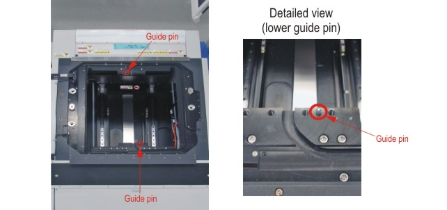
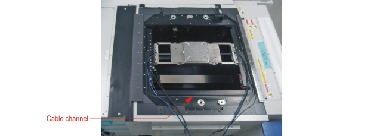

Bridge beam installation on Accretech UF3000 EX - Phase 1
An outline of the installation process is given in Bridge beam installation on Accretech UF3000 EX prober - Overview.
About this task
This task deals with Phase 1 (of 2) of the installation process.
Note This procedure must be performed by trained personnel experienced with
the operation and maintenance of Accretech UF3000EX series probers.
Before you begin
CAUTION Two persons are required to install the Direct Probe™ Bridge Beam hardware. This is to ensure that no
damage is caused to the sensor cables or to the pneumatic hoses leading to the
Bridge Beam.
Procedure
-
Place the Bridge Beam on the wafer prober.
Note the orientation of the head plate on the prober:
- For side dock, arrows on the bridge beam must point towards the left side of the prober when viewed from its front.
- For rear dock, arrows on the bridge beam must point towards the rear of the prober when viewed from its front.
The wafer prober has two guiding pins in the head plate that serve to align the Bridge Beam on the prober. These are shown in the figure below.

-
One person grasps the Bridge Beam with both hands and positions it on
the wafer prober as shown in the following figure. The guiding pins on
the prober must align with the guiding holes in the Bridge Beam.


-
Affix the Bridge Beam to the wafer prober with four M8 socket head bolts at
each end.
 Use an 8 mm Allen wrench. Tighten to a torque of 19 Nm.
Use an 8 mm Allen wrench. Tighten to a torque of 19 Nm.
Results
This completes phase 1 of the installation procedure.
What to do next
Functional changes
- Introduced in SmarTest 7.4.3